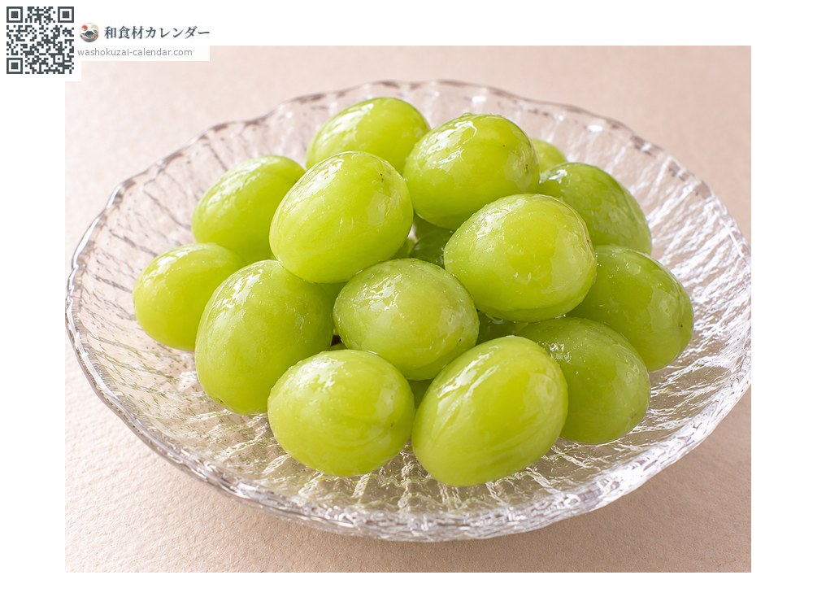
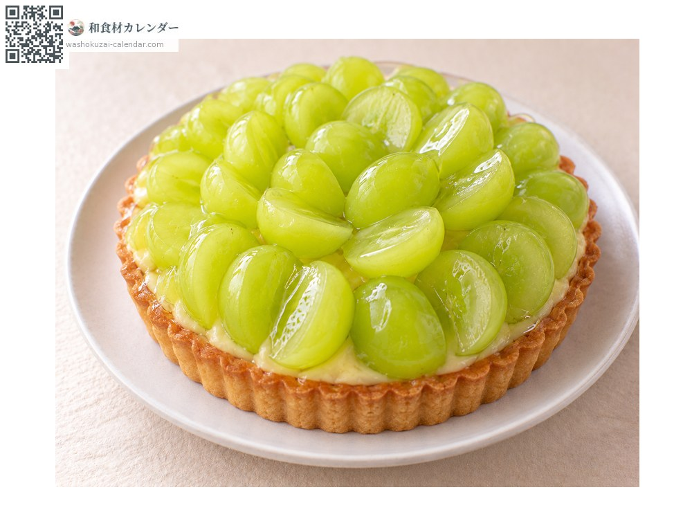
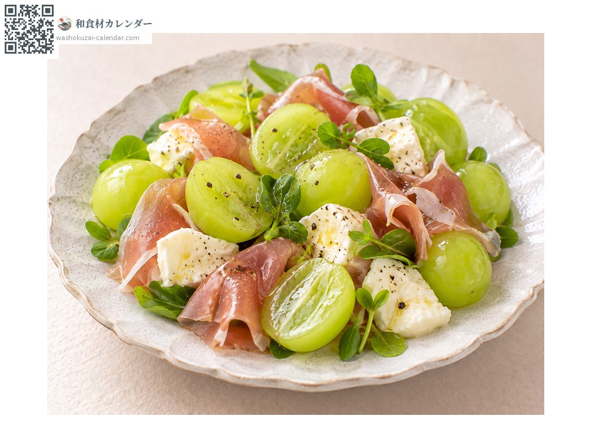
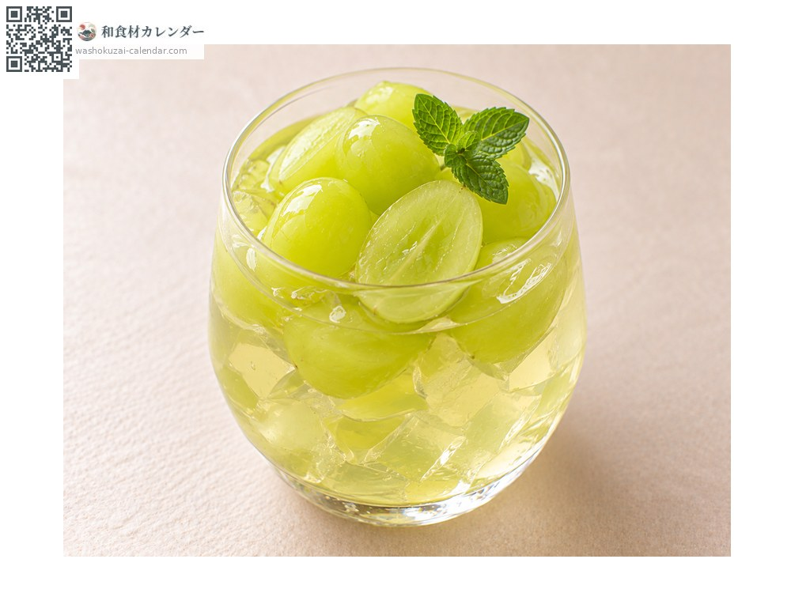

ผลไม้
องุ่นมัสกัต
マスカット ますかっと
ชื่ออื่นbudo, budou, masukattobuarekisandoria, masukattoobuarekisandoria
อร่อยที่สุดในเดือน ก.ค., ส.ค., ก.ย.

ช่วงที่อร่อยที่สุด
ม.ค.
ก.พ.
มี.ค.
เม.ย.
พ.ค.
มิ.ย.
ก.ค.
ส.ค.
ก.ย.
ต.ค.
พ.ย.
ธ.ค.
ช่วงอร่อยที่สุดมีจำหน่าย
วิธีปรุง

ทานสด
กินได้ทั้งเปลือก ไม่มีเมล็ดจึงไม่ยุ่งยาก

ทาร์ต
สีเขียวสวยงาม เข้ากับขนมตะวันตก

สลัด
จับคู่กับแฮมรมควันหรือชีส ความหวานกับความเค็มขับกัน

เยลลี่
ทำน้ำคั้นให้เซ็ตตัว กลิ่นหอมสดชื่น
วิธีเลือก
ผลใหญ่ สีเขียวสดใสและแน่นตึง ขั้วเขียวและหนา
วิธีเก็บรักษา
ไม่ต้องล้าง ใส่ถุงแช่เย็น เก็บทั้งพวงและล้างก่อนกิน
แหล่งผลิตหลัก
เกร็ดน่ารู้
ที่ครองตลาดปัจจุบันคือไชน์มัสกัต พันธุ์ค่อนข้างใหม่ที่จดทะเบียนเมื่อปี 2006 กินได้ทั้งเปลือก ไม่มีเมล็ด และหวานจัด ก่อนหน้านั้นมัสกัตออฟอเล็กซานเดรียที่ปลูกในโรงเรือนคือองุ่นระดับสูงของญี่ปุ่น